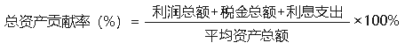
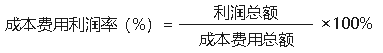
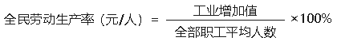
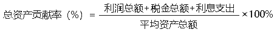
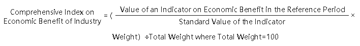
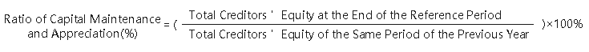
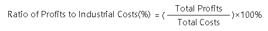
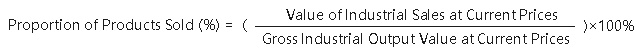

主要统计指标解释
工业 指从事自然资源的开采，对采掘品和农产品进行加工和再加工的物质生产部门。具体包括：(1)对自然资源的开采，如采矿、晒盐、森林采伐等（但不包括禽兽捕猎和水产捕捞）；(2)对农副产品的加工、再加工，如粮油加工、食品加工、轧花、缫丝、纺织、制革等；(3)对采掘品的加工、再加工，如炼铁、炼钢、化工生产、石油加工、机器制造、木材加工等，以及电力、自来水、煤气的生产和供应等；(4)对工业品的修理、翻新，如机器设备的修理、交通运输工具（包括小卧车）的修理等。
1984年以前农村的村及村以下办工业归属农业，1984年以后划归工业。
工业统计调查单位 工业统计调查单位分为两类：独立核算法人工业企业和工业生产活动单位。 (1)独立核算法人工业企业 是指从事工业生产经营活动的单位。独立核算法人工业企业应同时具备以下条件：①依法成立，有自己的名称、组织机构和场所，能够承担民事责任；②独立拥有和使用资产，承担负债，有权与其他单位签订合同；③独立核算盈亏，并能够编制资产负债表。 (2)工业生产活动单位 是指在一个场所从事一种或主要从事一种工业生产活动的经济单位。它包括独立核算工业企业按主营业务活动(即工业生产活动)划分的主营业务活动单位和非工业企业所属的工业生产活动单位（即原非独立核算工业生产单位）。工业生产活动单位，一般应同时具备以下三个条件：①具有一个场所，从事一种或主要从事一种工业活动；②单独组织工业生产、经营或业务活动；③单独核算收入和支出。
轻工业 指主要提供生活消费品和制作手工工具的工业。按其所使用的原料不同，可分为两大类：(1)以农产品为原料的轻工业，是指直接或间接以农产品为基本原料的轻工业。主要包括食品制造、饮料制造、烟草加工、纺织、缝纫、皮革和毛皮制作、造纸以及印刷等工业；(2)以非农产品为原料的轻工业，是指以工业品为原料的轻工业。主要包括文教体育用品、化学药品制造、合成纤维制造、日用化学制品、日用玻璃制品、日用金属制品、手工工具制造、医疗器械制造、文化和办公用机械制造等工业。
重工业 是指为国民经济各部门提供物质技术基础的主要生产资料的工业。按其生产性质和产品用途，可分为下列三类：(1)采掘（伐）工业，是指对自然资源的开采，包括石油开采、煤炭开采、金属矿开采、非金属矿开采和木材采伐等工业；(2)原材料工业，指向国民经济各部门提供基本材料、动力和燃料的工业。包括金属冶炼及加工、炼焦及焦炭化学、化工原料、水泥、人造板以及电力、石油和煤炭加工等工业；(3)加工工业，是指对工业原材料进行再加工制造的工业。包括装备国民经济各部门的机械设备制造工业、金属结构、水泥制品等工业，以及为农业提供的生产资料如化肥、农药等工业。 根据上述划分原则，修理业中以重工业产品为修理作业对象的划为重工业，反之划为轻工业。
工业总产值 是以货币表现的工业企业在一定时期内生产的已出售或可供出售工业产品总量，它反映一定时间内工业生产的总规模和总水平。它包括：在本企业内不再进行加工，经检验、包装入库（规定不需包装的产品除外）的成品价值，对外加工费收入，自制半成品、在产品期末期初差额价值。工业总产值采用“工厂法”计算，即以工业企业作为一个整体，按企业工业生产活动的最终成果来计算，企业内部不允许重复计算，不能把企业内部各个车间（分厂）生产的成果相加。但在企业之间、行业之间、地区之间存在着重复计算。 轻重工业总产值的划分也是按“工厂法”计算的，即一个工业企业在正常情况下生产的主要产品的性质属于轻工业，则该企业的全部总产值作为轻工业总产值；一个工业企业生产的主要产品的性质属于重工业，则该企业的全部总产值作为重工业总产值。
工业销售产值（当年价格） 是以货币形式表现的，工业企业在本年内销售的本企业生产的工业产品或提供工业性劳务价值的总价值量。工业销售产值包括的内容为： （1）销售成品价值：指企业在报告期内实际销售（包括本期生产和非本期生产）的全部成品、半成品的总价值，即按报告期产品的实际销售数量乘以不含增值税（销项税额）的产品实际销售平均单价计算。销售成品价值中包括企业生产的自制设备及提供给本企业在建工程、其他非工业部门和生活福利部门等单位 使用的成品价值，但不包括用订货者来料加工，并且只收取加工费的成品（半成品）价值。 （2）对外加工费收入：指企业在报告期内完成的对外承接的工业品加工（包括用定货者来料加工的产品）的加工费收入；对外工业品修理作业可收取的加工费收入和对内非工业部门提供的加工修理、设备安装等收入。对外加工费收入按不含增值税（销项税额）的价格计算。 对于以对外加工生产为主，对外加工费收入所占比重较大的企业，如果对外加工费收入出现跨年度支付的情况，为保证总产值生产口径计算的准确性，则应将对外加工费收入按实际情况调整，记录本年应实际收取的对外加工费收入。
出口交货值 指工业企业交给外贸部门或自营（委托）出口（包括销往香港、澳门、台湾），用外汇价格结算的产品价值，以及外商来样、来料加工、来件装配和补偿贸易等生产的产品价值。在计算出口交货值时，要把外汇价格按交易时的汇率折成人民币计算。
工业增加值 是指工业行业在报告期内以货币表现的工业生产活动的最终成果，是企业全部生产活动的总成果扣除了在生产过程中消耗或转移的物质产品和劳务价值后的余额，是企业生产过程中新增加的价值。 计算工业增加值通常采用两种方法。 一是“生产法”，即从工业生产过程中产品和劳务价值形成的角度入手，剔除生产环节中间投入的价值，从而得到新增价值的方法。公式为：
工业增加值＝工业总产值－工业中间投入＋本期应交增值税
二是“收入法”，即从工业生产过程中创造的原始收入初次分配的角度，对工业生产活动最终成果进行核算的一种方法，其计算公式为：
工业增加值＝固定资产折旧＋劳动者报酬＋生产税净额＋营业盈余
流动资产合计 资产满足以下条件之一应归为流动资产：（1）预计在一个正常营业周期中变现、出售或耗用，主要包括存货、应收账款等；（2）主要为交易目的而持有；（3）预计在资产负债表日起一年内（含一年）变现；（4）自资产负债日起一年内，交换其他资产或清偿负债的能力不受限制的现金或现金等价物。包括货币资金、应收票据、应收账款、存货等项目。来源于“资产负债表”中“流动资产合计”项目的期末余额数。
应收账款 指企业因销售商品、提供劳务等经营活动所形成的债权，包括应向客户收取的货款、增值税款和为客户代垫的运杂费等。来源于会计“资产负债表”中“应收账款”项目的期末余额数。
存货 指企业在日常活动中持有以备出售的产成品或商品、处在生产过程中的在产品、在生产过程或提供劳务过程中耗用的材料或物料等，通常包括原材料、在产品、半成品、产成品、商品以及周转材料等。来源于会计“资产负债表”中“存货”项目的期末余额数。
产成品 指企业已经完成全部生产过程并验收入库，可以按照合同规定的条件送交订货单位，或者可以作为商品对外销售的产品。来源于会计“产成品”科目的借方余额。
固定资产合计 指企业为生产商品、提供劳务、出租或经营管理而持有的，使用寿命超过一个会计年度的有形资产。包括使用期限超过一年的房屋、建筑物、机器、机械、运输工具以及其他与生产、经营有关的设备、器具、工具等。固定资产合计是时点指标，表示固定资产经过扣减折旧、减值准备等后的期末余额。执行《企业会计准则》或《小企业会计准则》的企业，来源于会计“资产负债表”中“固定资产”项目的期末余额数。
资产总计 指企业过去的交易或者事项形成的、由企业拥有或者控制的、预期会给企业带来经济利益的资源。资产一般按流动性（资产的变现或耗用时间长短）分为流动资产和非流动资产。其中流动资产可分为货币资金、交易性金融资产、应收票据、应收账款、预付款项、其他应收款、存货等；非流动资产可分为长期股权投资、固定资产、无形资产及其他非流动资产等。来源于会计“资产负债表”中“资产总计”项目的期末余额数。
负债合计 指企业过去的交易或者事项形成的，预期会导致经济利益流出企业的现时义务。负债一般按偿还期长短分为流动负债和非流动负债。来源于会计“资产负债表”中“负债合计”项目的期末余额数。
流动负债合计 负债满足下列条件之一的应归为流动负债：（1）预计在一个正常营业周期中清偿；（2）主要为交易目的而持有；（3）自资产负债表日起一年内到期应予清偿；（4）企业无权自主地将清偿推迟至资产负债表日后一年以上。包括短期借款、应付票据、应付账款、应付职工薪酬、应交税费等项目。来源于会计“资产负债表”中“流动负债合计”项目的期末余额数。
所有者权益合计 指企业资产扣除负债后由所有者享有的剩余权益。公司的所有者权益又称股东权益。包括实收资本、资本公积、盈余公积、未分配利润等。来源于会计“资产负债表”中“所有者权益合计”项目的期末余额数。
实收资本 指企业各投资者实际投入的资本（或股本）总额，包括货币、实物、无形资产等各种形式的投入。实收资本按投资主体可分为国家资本、集体资本、法人资本、个人资本、港澳台资本和外商资本。来源于会计“资产负债表”中“所有者权益”项下“实收资本”的期末余额数。
国家资本 指有权代表国家投资的政府部门或机构、直属事业单位对企业形成的资本金。来源于会计“实收资本”科目。
集体资本 指由本企业职工等自然人集体投资或各种机构对企业进行扶持形成的集体性质的资本金。来源于会计“实收资本”科目。
法人资本 指法人以其依法可支配的资产投入企业形成的资本金。来源于会计“实收资本”科目。
个人资本 指自然人实际投入企业的资本金。来源于会计“实收资本”科目。
港澳台资本 指我国香港、澳门和台湾地区投资者实际投入企业的资本金。来源于会计“实收资本”科目。
外商资本 指外国投资者实际投入企业的资本金。来源于会计“实收资本”科目。
营业收入 指企业经营主要业务和其他业务所确认的收入总额。营业收入合计包括“主营业务收入”和“其他业务收入”。来源于会计“利润表”中“营业收入”项目的本期金额数。
营业成本 指企业从事销售商品、提供劳务和让渡资产使用权等生产经营活动发生的实际成本。“营业成本”应当与“营业收入”进行配比。包括“主营业务成本”和“其他业务成本”。根据会计“利润表”中“营业成本”项目的本年累计数填报。
销售费用 指企业在销售商品和材料、提供劳务的过程中发生的各种费用，包括保险费、包装费、展览费和广告费、商品维修费、预计产品质量保证损失、运输费、装卸费等以及为销售本企业商品而专设的销售机构（含销售网点、售后服务网点等）的职工薪酬、业务费、折旧费等经营费用。
管理费用 指企业为组织和管理企业生产经营所发生的费用，包括企业在筹建期间内发生的开办费、董事会和行政管理部门在企业经营管理中发生的，或者应当由企业统一负担的公司经费等。根据会计“利润表”中“管理费用”项目的本期金额数填报。
研发费用 指企业在新知识、新技术、新产品、新工艺等的研究与开发过程中发生的费用化支出，以及计入“管理费用”会计科目的企业自行开发无形资产的摊销。费用化支出主要包括研发活动的人工费用、直接投入费用、用于研发活动的仪器、设备的折旧费、用于研发活动的软件、专利权、非专利技术的摊销费用、新产品设计费、新工艺规程制定费以及其他研发活动相关费用。执行企业会计准则的企业,根据会计“利润表”中“研发费用”项目的本年累计数填报。执行《小企业会计准则》的企业,根据会计“利润表”中“研究费用”项目的本年累计数填报。执行其他企业会计制度的企业以及会计“利润表”未列示“研发费用”或“研究费用”的企业，根据会计“管理费用”科目下“研究费用”明细科目的本期发生额，以及“管理费用”科目下“无形资产摊销”明细科目的本期发生额分析填报。
财务费用 指企业为筹集生产经营所需资金等而发生的筹资费用，包括企业生产经营期间发生的利息支出（减利息收入）、汇兑损失（减汇兑收益）以及相关的手续费等。根据会计“利润表”中“财务费用”项目的本期金额数填报。
利润总额 指企业在一定会计期间的经营成果，是生产经营过程中各种收入扣除各种耗费后的盈余，反映企业在报告期内实现的盈亏总额。来源于会计“利润表”中“利润总额”项目的本期金额数。
本年应交增值税 指企业按税法规定，从事货物销售或提供加工、修理修配劳务等增加货物价值的活动本期应交纳的税金。计算公式为：
本年应交增值税=销项税额－（进项税额－进项税额转出）－出口抵减内销产品应纳税额
－减免税款+出口退税
本年进项税额：指工业企业在报告期内购入货物或接受应税劳务而支付的、准予从销项税额中抵扣的增值税额。 本年销项税额：指工业企业在报告期内销售货物或提供应税劳务应收取的增值税额。
利税总额 指企业利润总额、产品销售税金及附加和应交增值税之和。
工业经济效益综合指数 是指现行综合评价工业经济效益总体水平及工业经济运行质量的指数。它是用工业产品销售率、总资产贡献率、资本保值增值率、资产负债率、流动资金周转率、成本费用利润率、全员劳动生产率等七项代表性经济效益指标，分别除以各项指标的标准值，再乘以各自的权数，加总后除以总权数求得。其计算公式为：
上式总权数为100。
总资产贡献率 是指企业一定时期内全部资产获利能力，是企业经营业绩和管理水平的集中体现，是评价和考核企业盈利能力的核心指标。计算公式为：

税金总额为产品销售税金及附加与应交增值税之和，平均资产总额为期初、期末资产总计的算术平均值。
资产负债率 是指反映企业经营风险的大小，反映企业利用债权人提供的资金从事经营活动的能力。计算公式为：
资产及负债均为报告期末数。
成本费用利润率 是指工业企业投入生产成本及费用的经济效益，同时也反映企业降低成本所取得的经济效益。计算公式为：

成本费用总额为主营业务成本和营业费用、管理费用、财务费用三项期间费用。
全员劳动生产率 是指反映企业的生产效率和劳动投入的经济效益。一般用平均每人一年创造的工业增加值表示。计算公式为：

全部职工平均人数为企业在报告期内全部从业人员的平均人数，计算公式为：
或：

工业产品销售率 是指反映工业产品已实现销售的程度，是分析工业产销衔接情况、研究工业产品满足社会需求的指标。计算公式为：
Explanatory Notes on Main Statistical Indicators
Industry refers to the material production sector which is engaged in extraction of natural resources and processing and reprocessing of minerals and agricultural products. It includes: (1) Extraction of natural resources, such as mining, salt production, and logging (but excluding hunting and fishing); (2) Processing and reprocessing of farm and sideline produces, such as rice husking, flour milling, wine making, oil pressing, cotton ginning, silk reeling, spinning and weaving, and leather making; (3) Manufacture of industrial products, such as steel making, iron smelting, chemicals manufacturing, petroleum processing, machine building, timber processing; and production and supply of electricity, water and gas; (4) Repair and renovation of industrial products, such as the repair of machinery and means of transport (including cars).
Prior to 1984, industrial enterprises run by villages and cooperative organizations under village were classified into agriculture. Since 1984, these enterprises have been grouped into industry.
Units of Industrial Statistics Survey These are classified into two categories: corporate industrial enterprises with independent accounting system and industrial establishments. (1) Corporate industrial enterprises with independent accounting system refer to enterprises engaging in industrial production activities which simultaneously meet the following requirements: ①They are established legally, having their own names, organizations, location, able to take civil liability; ②They possess and use their assets independently, assume liabilities, and are entitled to sign contracts with other units; ③They are financially independent and compile their own balance sheets. (2) Industrial establishments refer to economic units located in one single place and engaged entirely or primarily in one kind of industrial production activity, including units engaged in main business activities (industrial production activities) under industrial enterprises with independent accounting system and units engaged in industrial production activities under non-industrial enterprises (formerly industrial establishments with dependent accounting system). Industrial establishments generally meet the following requirements simultaneously: ① They have each one location and are engaged entirely or primarily in one kind of industrial activity each; ② They operate and manage their industrial production activities separately; ③ They have accounts of income and expenditure separately.
Light Industry refers to the industry that produces consumer goods and hand tools. It consists of two categories, depending on the materials used: (1) Industries using farm products as raw materials. These are branches of light industry which directly or indirectly use farm products as basic raw materials, including the manufacture of food and beverages, tobacco processing, textile, clothing, fur and leather manufacturing, paper making, printing, etc. (2) Industries using non-farm products as raw materials. These are branches of light industry which use manufactured goods as raw materials, including the manufacture of cultural, educational and sports articles, chemicals, synthetic fiber, chemical products for daily use, glass products for daily use, metal products for daily use, hand tools, medical apparatus and instruments, and the manufacture of cultural and clerical machinery.
Heavy Industry refers to the industry which produces capital goods and provides various sectors of the national economy with necessary material and technical basis. It consists of the following three branches according to the purpose of production or the use of products: (1) Mining, quarrying and logging industry refers to the industry that extracts natural resources, including extraction of petroleum, coal, metal and non-metal ores, and logging. (2) Raw materials industry refers to the industry that provides various sectors of the national economy with raw materials, fuels and power. It includes smelting and processing of metals, coking and coke chemistry, chemical materials and building materials such as cement, plywood, and power, petroleum refining and coal dressing. (3) Manufacturing industry refers to the industry that processes raw materials. It includes machine-building industry which equips sectors of the national economy, industries of metal structure and cement products, industries producing means of agricultural production, such as chemical fertilizers and pesticides. According to the above principle of classification, repairing trades engaged primarily in repairing products of heavy industry are classified into heavy industry, while those engaged in repairing products of light industry are classified into light industry.
Gross Industrial Output Value refers to the total volume of industrial products sold or available for sale in monetary terms during a given period, which reflects the total achievements and overall scale of industrial production during a given period. It includes the value of the finished products in the enterprises, which are not to be further processed and have been inspected, packed and put in storage (where applicable), the income from external processing and the value gain of semi-finished products at the end of the reference period over the beginning. The gross industrial output value is calculated by the factory approach, i.e. the whole industrial enterprise is regarded as the basic accounting unit in calculating the gross industrial output value. No double calculations are to be made within the same enterprise and the output value of different workshops (branch factories) should not be added. However, this approach does not exclude the possibility of double calculations between enterprises, sectors and regions.
Output value of light and heavy industries is also classified by the factory approach. Under normal conditions, if the major products of an industrial enterprise belong to light industry products, the gross output value of that enterprise is classified wholly into light industry; the same principle applies to heavy industry.
Sales Value of Industry (Current Price) refers to refers to the total value of industrial products sold or industrial services provided in monetary terms within the current year. It includes: (1) Sales Value of Finished Products. Sale value of finished products refers to the total value of finished and semi-finished products sold within the reporting period (including those produced within and outside the period). It equals the actual sales volume of products sold within the reporting period timing the actual average sales price (excluding value added or sales tax). It includes the equipment made by the enterprise itself, as well as the finished products provided to the projects under construction, non-industrial departments and welfare department, and excludes the value of finished or semi-finished products of external processing with supplied materials that produces only processing charges. (2) Income from External Processing: refers to income from contracted external processing of industrial products (including processing of industrial products using materials from the clients), and the income from industrial repairing work provided to other units. Income from external processing is calculated using information from the item “products sales income” in the enterprise accounting at the prices excluding value-added tax.
For an enterprise whose main business is external processing and the charges of external processing constitute a large proportion of its income, in case of cross-year payment, the income of external processing charges shall be adjusted and the actual income of external processing charges of the current year shall be recorded to ensure the accuracy of the coverage of gross industrial output.
Export Delivery Value refers to the value of the products that an industrial enterprises have delivered to export units or have exported on its own or per procuration (including those sold to Hong Kong, Macaw and Taiwan), and the value of the products from processing and compensation trades(processing with given materials or samples, assembling supplied components). In calculating the export delivery value, the foreign exchanges shall be converted into yuan at current exchange rates.
Value-added of Industry refers to the final results of industrial production of industrial enterprises in monetary terms during the reference period. It equals to the total achievements of all industrial production minus the goods and services consumed or transferred during the industrial production of enterprises, in other terms the newly added value during the industrial production of enterprises. It is calculated by the following two approaches: a) The production approach. The value added is calculated by taking the value of industrial intermediate input out of the final value of products and labor services that comes from industrial production. The formula used is:
Value-added of industry = gross industrial output－industrial intermediate input + value-added tax
b) The income approach. It is calculation of the final value of industrial activities by approaching the primary distribution of the primary income of industrial production. The formula used is:
Value-added of industry = depreciation of fixed assets + remuneration of laborers + net production tax+ operating surplus
Total Current Assets refer to the assets that meet one of the following requirements: (1) expected to be cashed, sold or used in a normal operation cycle, mainly including inventory and accounts receivable; (2) be owned for trading purpose mainly; (3) expected to be cashed in one year (including one year) from the day of the Balance Sheet; (4) unlimited cash or cash equivalents that can be exchanged with other assets or being capable of settling debts during one year since the day of the Balance Sheet. Included are monetary capital, notes receivable, accounts receivable and inventories. Data on this indicator can be obtained from the year-end figures of Total Current Assets in the Balance Sheet of accounting records.
Accounts Receivable refers to creditor's rights formed by business activities such as selling goods, providing labor, which include payment for goods that should be charged to the customer, value-added tax and advance freight for the clients. It comes from the ending balance of Accounts Receivable in Balance Sheet of accounting records.
Inventories refers to finished goods or commodities held in preparation for sale in enterprises’ daily activities, goods in the production process, material or the physical materials consumed in the production process or in the process of providing labor, usually include raw materials, goods in the production process, semi-finished products, finished products, goods and materials in flow. It comes from the ending balance of Inventory in Balance Sheet of accounting records.
Finished Goods refers to the products that the enterprises have completed all of the production process and accepted and put in storage, and can be sent to the ordering units in accordance with the contract stipulations, or can be on sale. It comes from the debit balance of Finished Products of accounting.
Fixed Assets refers to houses, buildings machines, vehicles and other equipment, appliances and tools related to production and operation that have been used for more than one year. It also includes articles that are not major equipment of production or operation, but the value of which exceeds 2000 yuan and the service period of which exceeds 2 years. Data can be obtained from the year-end figures of Fixed Assets in the Balance Sheet of accounting records.
Total Assets refer to all resources that are owned or controlled by enterprises through previous trades or transactions with expectation of making economic profits. Classified by the degree of liquidity, total assets include current assets and non-current assets. Current assets can be classified into monetary capital, trading financial assets, notes receivable, accounts receivable, advanced payments, other receivables and inventories. Non-current assets can be divided into long-term equity investment, fixed assets, intangible assets and other non-current assets. Data on this indicator can be obtained from the year-end figures of total assets in the Balance Sheet of accounting records.
Total Liabilities refer to payable liabilities of enterprises that accumulated from previous trades or transactions with expectation of economic profits leaking out. In terms of payment, it can be divided into liquid liabilities and long-term liabilities. Data on this indicator can be obtained from the year-end figures of total liabilities in the Balance Sheet of accounting records. It comes from the debit balance of Total Liabilities in the Balance Sheet of accounting records.
Total Liquid Liabilities refer to total debt payable by enterprises within an operating cycle of one year or over one year, including short-term loans, payables and advance payments, wages payable, taxes payable and profits payable, etc. Data can be obtained from the year-end figures of Total Liquid Liabilities in the Balance Sheet of accounting records.
Creditors’ Equity refers to investors’ ownership of net assets of the enterprise. It is equal to the total assets of the enterprise minus its total liabilities, including the primary input from investors, capital accumulation fund, surplus accumulation fund and undistributed profit. Data can be obtained from the year-end figures of Creditors’ Equity in the Balance Sheet of accounting records.
Paid-in Capital refers to the capital (or share) actually invested by the investors of an enterprise, including currency, goods, intangible assets, etc. Classified by the investing bodies, paid-in capital includes state capital, collective capital, corporate capital, individual capital, Hong Kong, Macaw and Taiwan capital and foreign capital. Data on this indicator can be obtained from the accounting subject of Paid-in Capital in the accounting record of enterprise.
State Capital refers to the investment in an enterprises made by government departments or agencies under government’s jurisdiction on behalf of state. Data on this indicator can be obtained from the accounting subject of Paid-in Capital in the accounting record of enterprise.
Collective Capital refers to the collective capital contributed by work staff or other institutions to support an enterprise. Data on this indicator can be obtained from the accounting subject of Paid-in Capital in the accounting record of enterprise.
Corporate Capital refers to the investment in an enterprise made by a corporate body out of its legal disposable assets. Data on this indicator can be obtained from the accounting subject of Paid-in Capital in the accounting record of enterprise.
Individual Capital refers to the capital actually invested in an enterprise by an individual. Data on this indicator can be obtained from the accounting subject of Paid-in Capital in the accounting record of enterprise.
Hong Kong, Macaw and Taiwan Capital refers to the capital actually invested in an enterprises by investors from Hong Kong, Macaw and Taiwan. Data on this indicator can be obtained from the accounting subject of Paid-in Capital in the accounting record of enterprise.
Foreign Capital refers to the capital actually invested in an enterprise by a foreign investor. Data on this indicator can be obtained from the accounting subject of Paid-in Capital in the accounting record of enterprise.
Business Revenue refers to the revenue from the sales of products (or commodities) and from rendering of industrial services by industrial enterprises. It is classified into two categories: principal business revenue (or basic business revenue) and other business revenue (or additional business revenue). It comes from current amount of Business Revenue in income statement.
Business Cost refers to the total cost incurred by an enterprise in its principal business and other business operations.It includes “Cost of principal business” and “Cost of other business”.It come from this year’s cumulative report of “operating cost” items from the “income statement”.
Selling Expense refers to the cost during the sale of goods and materials, providing labour services, including insurance, packing, exhibition fees and advertising fees, merchandise maintenance costs, expected product quality guarantee loss, transportation fees, handling fees, and operating expenses for the sales of the company's products such as employee compensation, business expenses, depreciation costs for dedicated sales offices (including sales outlets, after-sales service outlets, etc.).
Administrative Expense refers to the expenses for the organization and management of enterprise operating, including the start-up costs during the construction of enterprises, funds occurred during enterprises operating by board of directors and executive management in the enterprise management, or burden by enterprises. It comes from current amount of management cost in income statement.
Financial Expenses refers to cost of raising fund for enterprises to raise funds for production and operation, including interest payments (a reduction in interest income), exchange loss (less exchange gains) and related fees during the period of production. It comes from current amount of financial expenses in income statement.
Total Profits refers to the operation results in a certain accounting period, and it is the balance of various incomes minus various spending in the course of operation, reflecting the total profits and losses of enterprises in reference period. Data are obtained from the amount of total profits in the profit statement of the accounting record of enterprise.
Value-added Tax Payable refers to the amount of the value-added tax which should be paid by the enterprises according to tax laws during the reference period of selling goods or providing such services as processing, repairing or assembling that add value to goods. The formula used is:
Value-added Tax Payable=Output Tax－(Input Tax－Input Tax Returns)－
Export Deduct Domestic Sales Goods Tax－Tax Deduction+ Export Tax Refund
Amount of Input Tax at Current Year refers to the VAT an industrial enterprise pays for purchasing goods or receiving taxable services within the reference period, which is allowed to be deducted from the amount of output tax.
Amount of Output Tax at Current Year refers to the VAT an industrial enterprise pays for selling goods or providing taxable services within the reference period.
Total Pre-Tax Profits refers to the sum of total profits, sales tax as well as additional and payable value-added taxes.
Comprehensive Index on Economic Benefit of Industry refers to the current comprehensive evaluation of the general level of economic benefit of industry and the performance of industrial economy. It is calculated by a selection of representative indicators on economic benefit divided by the standard value of each indicator respectively, multiplied by the weight of each indicator, summed and divided by total weight. The formula used is:

Ratio of Total Assets to Industrial Output Value refers to the profit-making capability of all assets of the enterprise. As a core indicator for the evaluation and assessment of the profit-making potential of the enterprise, it is a focused reflection of the performance and management efficiency of the enterprise. This ratio is calculated as follows:
where Total Taxes are the sum of tax and extra charges on the sales of products and value-added tax payable; and Average Assets are the arithmetic mean of beginning assets and ending assets.
Ratio of Capital Maintenance and Appreciation is an important indicator of the changes of net assets of an enterprise and a focused reflection of the development capability of enterprises. It is the ratio of total creditors’ equity at the end of the reference period to that of the same period of the previous year, calculated as follows:

where Creditors’ equity is equal to the total assets of the enterprise minus its total liabilities.
Assets-Liability Ratio reflects both the operation risk and the capability of the enterprise in making use of the capital from the creditors. It is calculated as follows:
where both assets and debts are figures at the end of the reference period.
Ratio of Profits to Industrial Costs refers to the ratio of profits realized in a given period to the total production costs of industrial enterprises in the same period, which also reflects the economic benefit attained by the enterprises from reduced costs. This ratio is calculated as follows:

where Total costs are the sum of cost of products sold, marketing cost, management cost and financial cost.
Value-added Labor Productivity reflects the production efficiency of the enterprise and economic benefit of its labor input. It is usually expressed as the industrial value-added created by an average member of an industrial enterprise in a year. The formula used is:
Average Number of Staff and Workers refers to the average number of all employed persons by an industrial enterprise within the reference period. The formula used is:
Or
Proportion of Products Sold refers to the sales of industrial products to the gross industrial output value, and is used to analyze the linkage between production and sales and the extent to which the needs of the society are met by the supply of industrial products. It is calculated as follows:
